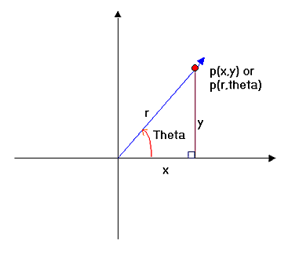
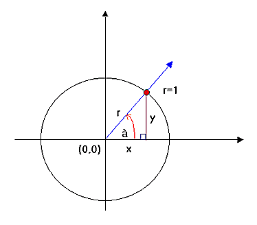
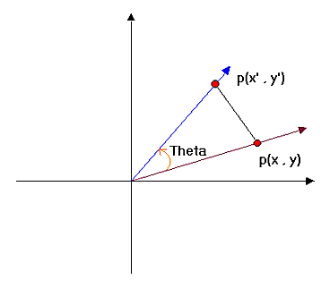
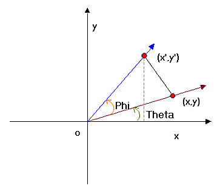
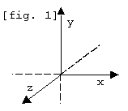

I bet you felt very annoyed by the fact that I only explained projection on my first article right? Well, the series is primarily geared to coders who had no experience in 3d coding and to advance one's knowledge regarding 3d in general.
This time around, I will be explaining to you 2d and 3d rotations. "2D rotation in a 3d article?!!! Are you out of your mind?!!!" Hardly, in fact, 2d rotation is the basis of 3d rotation as you will know later. But before I could discuss rotations to you, let me start by some basic intermediate and trigonometric math. Don't worry, this is not as hard as you might think. So prepare yourself for some street math. ;*)
Up to this point, we have used the Cartesian coordinate system in 2d or in 3d. Coordinates in these systems are defined as either p(x,y) or p(x,y,z).
In the polar coodinate system however, the ordered pair is not represented by x or y but of r and angle originating from the origin or the pole, which is the center of the coordinate system. Given an angle Theta and a radius r the ordered pair would be written as: p(r,theta).
r represents the distance from pole, and theta is the measure of the angle from the positive x-axis.

So in the polar system, we only need the length (r), sometimes called the magnitude, and the angle from the positive x-axis. Why discuss polar system when the monitor is best suited for a Cartesian system? The answer is that some things can be easily done in the polar coodinate system. And one of those things is "rotation" ;*)
There are six basic trig functions. The sine, cosine, tangent, secant, cosecant, and the cotangent. As of the moment, we are interested in just 2, the SINE and COSINE.

Say you have the unit circle above (a unit circle is a circle having a radius of 1), with an angle (theta) at 45 degrees. I already drew the right triangle for you labelled as Y or O (Opposite side), X or A (adjacent side) and r or H (Hypotenuse). In Trigonometry, there is a mnemonic called the "SOH-CAH-TOA" which roughly means:
Translating it to x,y and r...
As i said we only need sin and cos for now.
Multiplying both sides by r...
Since on a unit circle r = 1 then
By now you should already have realized that Sine has something to do with the y coordinate and Cosine to the x coord. ;*)
Now how do we convert from polar to Cartesian? Easy, as long as you know the radius and the angle (theta) just pluck the values to EQ's 1 and 1-1. ie:
Here's an example file: polrot.bas
To change from polar to Cartesian:
*These 2 would be useful later on but keep it on the sidelines for now. ;*)
Before forget, all the other trig functions can be derived from the SIN and COS function.
Okay, this is very important so listen closely. We, as students are used with the degree measurement of angles. Probably because degrees are easy to visualize, so our teachers and beginners math books use it. But it turns out that computer languages, BASIC included, cannot directly accept degree measure in their built in trig functions. Why? Frankly, I don't know. Maybe because radians is an exact measure or the implementors just want to be cooler. :*)
Now, since QB won't let you pass degrees to their built-in trig functions, and radians is sometimes a pain to implement (due to the fact that it's a small value), we have to use degree measurement and converting it to radian measure before passing it to the functions.
To convert:
*PI is a value of the circumference of a circle divided by its diameter. Its actual value is 3.141593...
Fun fact: Pi is 180 degrees. Guess what 2*PI is? :*)
Fun fact: You can easily calculate PI by PI=ATN(1)*4
Using the polar system to rotate a point around the center is pretty easy. But how about rotation from the point's coordinate itself? This is where our 2d coordinate rotation comes from. Rotating from p(x,y) to p(x',y'):

But how did those equations came about? Most articles just smack you into these equations and never look back on how those came to be. I bet some of them doesn't know how to derive it themselves. :*). And because I'm different, I will teach you how they came to be. Moreso, you could impress your friends by your geekiness when you tell them you know. :*)
Remember these equations?
Yep they are the Polar to Cartesian coordinate system conversion. :*) We also need the Angle addition identities.

Legend:
P = Phi
T = Theta
Cosine Identity:
Sine Identity:
Let (P+T) = Theta(Just one angle)...
Then by substitution from EQ 1 and 1-1
Distributing r:
And looking back at EQ's 1 and 1-1:
Then by substitution:
And Viola!!! That's how you prove the 2d rotation formula. ;*)
Final equations:
*Note: Actually, had I used EQ's 2 and 2-1, the proof would be much easier since r is already removed. Though I believe that using r forces you to understand the concept behind the proof. So as an exercise, why don't you try it yourself? ;*)
If you have understood all the stuff that I have written form article 1 up to here, you might have already guessed that our standard 2d rotation is THE SAME AS ROTATING FROM THE Z-AXIS. If you did, good. If not, look again on this figure:

See, rotating from the z-axis rotates your point on the XY plane. Here's the code supplement which added rotations
to our previous starfield. Don't get dizzy. :*)
proj-rot.bas
Remember when I said that 3d rotation is almost like 2d rotation? Well, I'm not a man who breaks my word. So let me begin by saying that since rotation on the z-axis takes on the xy plane and rotation on the x-axis takes on the yz plane, where do you think rotation on the y axis take place? Yes, the xz plane!. :*)
Now doing these rotations are pretty straightforward, all we have to do is smack the needed values on our 2d rotation equation for each axis and we're good to go. One thing to remember though is "TO USE THE OLD VALUES UNTIL THE NEW ONES ARE FOUND". Which means for a full rotation on all the axes, do not directly put values until they are fully rotated on the axis that they are rotated.
Here's the full 3d rotation Equations:
*All values are floating point numbers
Your rotated x/y/z are the points completely rotated over the x,y and z axes. I had to save the rotated values at some point to make it work or our rotations wouldn't look right. :*). Its also notable that "THE ORDER IN WHICH YOU ROTATE FROM EACH AXIS IS VERY IMPORTANT". Rotating in z-x-y order would not produce the same result as rotating in the x-y-z order. I'm using x-y-z because of the alphabet. Actually, Kiwidog's rotation is in x-y-z order and since his article started me with 3d, I'm writing this as a tribute to him. As they say, "old habits die hard".:*)
Since, QB's implementation of the FPU(The Floating Point Unit) is really crap, we could optimize this by using lookup tables or just calculating some constants before the actual rotation equations. ie.
Doing this would speed your render a lot. :*) Here's an example file: 3drot.bas
Before I forget, to translate, subtract cam(x,y,z) AFTER rotation. Unless, you'd want your rotations to be off-center. Think about when to use either. Heck, why don't you try it to see the effects? :*)
However, there's still a faster way to rotate. Notice the amount of multiplication just to do a full 3 axis rotation? Yep, 12 multiplies! It turns out that we can reduce this to just 9! But how do we do it? Either by using matrices or weeding out constants using standard algebra. Both methods would work well and would roughly produce the same result. Same nine multiplies, same amount of arithmetic. Though you could directly translate the points using the 4th row of a 4*4 matrix, we can also do it by subtracting our camera value from the rotated coordinate. And if you look closely either the matrix or the algebra method would produce the same constants. :*) *I will touch up on matrices after the texturemapping article so don't worry. :*)
There are other articles discussing this type of optimizations but sadly, the final 3*3 matrix just does not rotate right. So if you want to derive a final 3*3 matrix yourself from your own rotation order, you have to do it yourself. :*)
BTW, the constants we will derive after this is a 3*3 rotation matrix. We just didn't use the matrix way but the algebra 101 way. :*)
So now let's begin the headache.
Standard 12 mul rotation:
Let ox,oy,oz the old coords
Let nx,ny,nz the new rotated coords
I'm numbering the equations for easy referencing later so you won't get lost in the mess.
*From 12 to 9 multiplies. We will simplify each axis equation starting from the x axis. Not the numbers as they reference equations from our original 12 mul rotation.
So...
* I don't know if this would make sense to you but this I'm trying to minimize the text for the actual math to be understandable. ;*)
****For X axis....
*let's substitute nz(2) to oz
*distribute sy inside nz(2)
*now substitute nx(4) and ny(1)
*distribute cz and sz
*distribute the negative sign(-) and remove parenthesis. (note the change of signs)
*use the commutative property of addition to reorder the terms in x+y+z order.
*factor out x,y and z
*We already have precalculated the constants to use(inside square brackets). Let's store 'em.
so...
****For Y axis...
*distribute cz and sy
*Rearrange in x,y,z order
*Factor out x, y and z
*oz has a (-) sign. Make sx*cz negative so that we could use addition.
****For Z axis...(easiest!!!!)
*substitute nz(2)
*distribute
*make sy negtive as to make ox positive
****Final Precalculated constants!!!!
****This is our final 3*3 Matrix.
We smack the above constants down our original coord and we get the rotated coord without much hassle. Faster and simpler too!!!
Final Equations!!!! (9 muls only)
Speed increase may not be apparent if you're just rotating a cube but try to rotate a 1000 polygon model and you'll see how much speed difference there is. ;*)
Here's a sample file benchmarking this against the standard 12 mul rotation: 3dbench.bas
Editor's Note: Start QB with the /AH switch to avoid the "subscript out of range" error.
You might want to see what's in store for you on the next article. So here is just one (two actually) little part
of it. :*)
3dwire.bas
texture.bas
Lastly, don't limit yourself to just points, you can use sprites for better and cooler effects. :*)
vecballs.bas
Get yourself a stretchsprite routine and you cam make some even cooler stuff!!!
stretch.bas
From now on I'll be using the 3*3 matrix constants as opposed to the 12 mul rotation so that our renders are a lot faster. And also because it will not only be points that we will rotate later but VECTORS. :*)
Now go ahead and code yourself a 3d rotator even if its just a cube. Because next time I'll be discussing to you on how to generate 3d shapes the math way and I'll touch up on polygons so that you can fill your models at runtime and impress your friends. I'll also touch up on 2 more 3d coordinate systems. The SPHERICAL and CYLINDRICAL coordinate systems. :*). So until next 'ish, Happy Coding!!!
Credits:
Kiwidog for introducing me to the world of 3d
Plasma357 for SetVideoSeg
Scm for proofreading
Biskbart for the tesselation algo
Relsoft 2004
| Author: | Rel (Richard Eric M. Lope) |
| Email: | vic_viperph@yahoo.com |
| Website: | http://rel.betterwebber.com/ |
| Released: | 2004 |